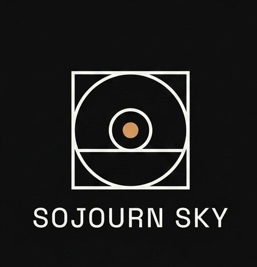
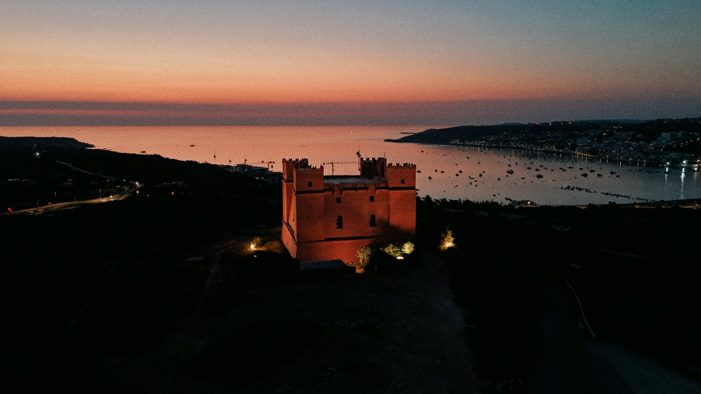

Aerial photography and film, worked in low light.
Sunrise and dusk are where this work lives — the half hour either side of first and last light. Based in Sydney, Australia, occasionally taking on select projects.

First Light
Marfa, Malta — August 2026
Aerial Stills
Landscape and coastline stills, shot specifically in the narrow window of low, warm light either side of sunrise.
Aerial Film
Short-form footage for projects where atmosphere matters as much as coverage — property, hospitality, and personal work.
Footage Licensing
Existing stills and clips from the archive available to license for personal or commercial use.
Pricing scoped per project.
Recent work is shared on Instagram — enquiries welcome there directly.
@sojourn.sky →sojourn — a brief stay, before moving on.